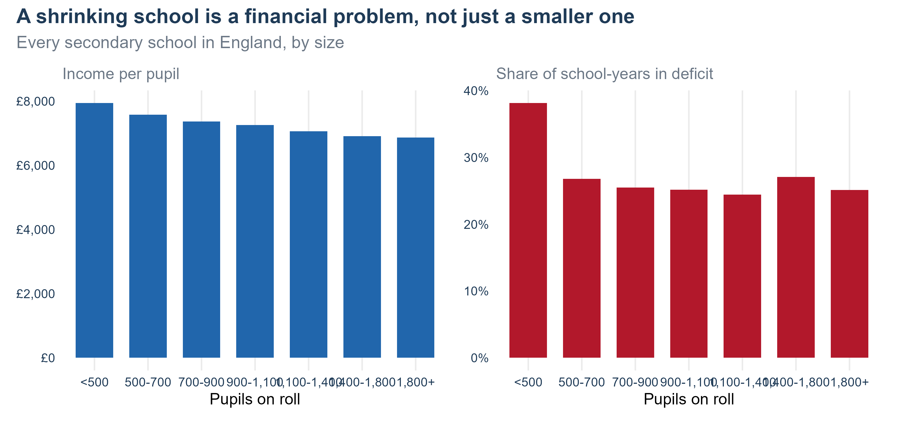
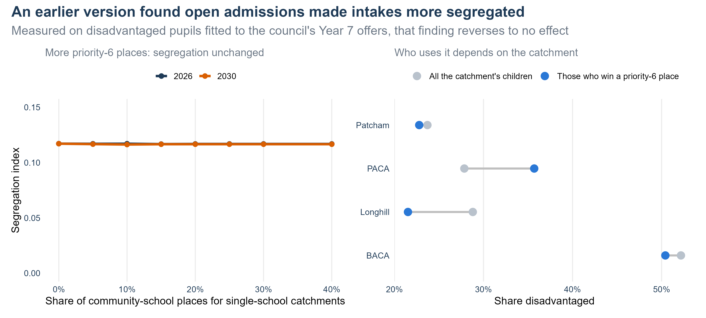

flowchart LR A["Where children live<br/>census, ONS small areas"] --> M B["Journey times<br/>routed walk and bus"] --> M C["What families ask for<br/>16 years of factsheets,<br/>catchment preferences"] --> M D["Catchment maps"] --> M M["Spatial interaction model<br/>M0 to M5"] --> R["Admission numbers and<br/>the council's priorities"] R --> S["Refused children<br/>re-offered by 2nd preference"] S --> O["Intakes, journeys,<br/>money, social mix"] O --> P["The simulator,<br/>and the options scored"]
Brighton & Hove secondary schools
What the evidence says, how it was built, and what to do about Longhill
Adam Dennett, UCL Centre for Advanced Spatial Analysis
2026-09-15
Before anything else
Warning
Beta. Every number in these slides is modelled from published data, not a record of what happened or a forecast to plan on. The model has not been fully validated.
- Built from published data only — no pupil-level records.
- The full working, every source and every caveat: The Brighton Secondary School System: a strategic view
- Try any option yourself: the policy simulator
The situation
A system built for more children than it has
- The city publishes 2,515 Year 7 places across its ten secondary schools.
- The modelled cohort is 2,267 in 2026 and 1,835 by 2035 — those children are already in primary school.
- By 2035 that is about 720 empty Year 7 places a year.
- Nine of the ten schools have been spending their reserves. The money is a city problem, not only a Longhill problem.
Longhill
- Takes about 91 children in 2026 and 75 in 2030, on 210 places.
- About £0.8m a year short of break-even in 2030.
- Sits at the far edge of the city, at Ovingdean.
Ten schools, six catchments, and where the children are

Figure 1
The cohort is already falling

Figure 2
Who can reach a school within 30 minutes

Figure 3
Poor access and child poverty in the same places

Figure 4
Nine of the ten schools are spending their reserves

Figure 5
Small schools get more per pupil and still run deficits

Figure 6
What the evidence says
- This is not mainly a school quality problem. Most of what separates schools’ headline results arrives with the children; the part a school can reach runs mostly through attendance.
- Families choose on the headline score, which largely describes the intake — so choice is self-fulfilling.
- Admissions criteria only bind at some schools. Several schools offer a place to every first-preference applicant.
- Physical access is unequal, in the worst direction. 29 neighbourhoods can reach no school place within 30 minutes by walking and bus, and access and child poverty go together.
- Children from the most deprived neighbourhoods travel 3.7 minutes further each way than everyone else, under the map in force.
How the model works
From published data to options
A spatial interaction model
\[T_{ij} = A_i\, O_i\, W_j\, c_{ij}^{-\beta}\, e^{\gamma\, \text{in catchment}}\, C_j^{\delta}\]
- \(T_{ij}\) — children from neighbourhood \(i\) choosing school \(j\)
- \(O_i\) — children living in \(i\)
- \(W_j\) — how attractive school \(j\) is
- \(c_{ij}\) — walk-and-bus minutes; \(\beta\) how fast demand falls with them
- \(\gamma\) — how strongly families follow their catchment
- \(C_j\) — rival schools nearby
- \(A_i\) — makes every neighbourhood place all its children
flowchart TB
N["Each neighbourhood's children"] --> Sh["Shared across schools by<br/>distance, attractiveness,<br/>catchment, competition"]
Sh --> Cap{"School full?"}
Cap -- "no" --> In["Admitted"]
Cap -- "yes" --> Pr["Council priorities decide<br/>who is admitted"]
Pr --> Re["The rest re-offered at their<br/>next choice with room"]
Re --> Cap
The map alone: every school equally attractive

Figure 7
Adding one thing at a time

Figure 8
Longhill’s modelled catchment, as the model gets more realistic

Figure 9
Does the model reproduce what we know?
It reproduces the 2026 offers, which it was not fitted to

Figure 10
It reproduces where each catchment’s families want to go

Figure 11
A system that moves
The same system, year by year

Figure 12
The same lever works in one year and not the next

Figure 13
Complex interactions, surprising results
Things the model shows that intuition would not

Figure 14
Open admissions and integration: a finding that did not survive

Figure 15
Checked, and corrected, along the way
The segregation results changed as the measure was tested against published figures.
| How disadvantaged pupils were counted | Index today | Whitehawk back to Longhill |
|---|---|---|
| By neighbourhood | 0.154 | 0.137 |
| Whole-school shares, fitted on today’s map | 0.118 | 0.140 |
| Whole-school shares, fitted before the policy change | 0.124 | 0.125 |
| Year 7 offers, 2026 (the model’s measure) | 0.117 | 0.122 |
- Scored by neighbourhood, the schools came out in the wrong order against DfE’s published shares.
- The published shares lag the policy by up to five years, so the model is now fitted to the first Year 7 offers under today’s map and rules (council factsheet, 2026).
- The Whitehawk redraw’s effect on segregation turned out too small to call. Its case rests on journeys and Longhill, not on segregation.
The options
Three priorities, scored at once
| Option | Longhill intake | Deprived children’s extra journey | Segregation index | Displaced | Community schools’ balance |
|---|---|---|---|---|---|
| Today | 75 | 3.5 min | 0.117 | 2 | −£3.5m |
| Whitehawk back to Longhill | 86 | 3.2 min | 0.121 | 0 | −£3.5m |
| Longhill 150, central schools trimmed | 75 | 3.5 min | 0.118 | 4 | −£3.5m |
| Longhill at Elm Grove (150), map redrawn | 103 | 0.0 min | 0.153 | 2 | −£3.7m |
| CoMArt re-opened (not available) | 49 | 2.2 min | 0.119 | 1 | −£4.5m |
| Package without a move | 92 | 3.3 min | 0.122 | 1 | −£3.1m |
| Elm Grove package | 108 | 0.1 min | 0.150 | 2 | −£3.1m |
| Longhill closed | — | 4.2 min | 0.103 | 2 | −£2.3m |
2030, council priorities. “Package without a move”: Whitehawk back, Longhill 150, central trims, no priority 6, Cardinal Newman 300, Brighton Aldridge 150. “Elm Grove package”: Longhill at Elm Grove at 150 with the map redrawn, Cardinal Newman 300, King’s 150, Brighton Aldridge 150.
Only a nearer school closes the access gap

Figure 16
What this means for Longhill
A smaller Longhill at the top of Elm Grove
What it does (150 places, catchments redrawn)
- Longhill takes 123 in 2026 and 103 in 2030 — against 91 and 75 today.
- Deprived children’s extra journey falls from 3.5 to 0.0 minutes.
- Whitehawk’s disadvantaged children travel 24 minutes instead of 53.
- The map drawn round it puts 5 of the 6 Whitehawk neighbourhoods back in Longhill’s catchment — as part of a redesign, not a reversal of the 2024 change.
- With Cardinal Newman, King’s and Brighton Aldridge taking fewer: 134 in 2026 and 108 in 2030.
What it costs
- A site — not costed in this work.
- Intakes more concentrated: segregation index 0.153 against 0.117.
- About 434 children a year in neighbourhoods that change catchment.
- Longer journeys for Rottingdean, Saltdean and Woodingdean, and more children leaving the city.
- Longhill still does not break even — about £0.5m a year short in 2030.
- It needs families to follow a new map as closely as the one they have — the assumption every redraw result rests on.
Access or mixing? The review has to choose
- A school near Whitehawk shortens disadvantaged children’s journeys and concentrates them in one school. No option does both.
- The evidence here leans towards access: a more mixed intake is a weak lever on results, and the journey is made by every child, twice a day.
- What this work cannot show is whether shorter journeys raise attendance — the lever that matters most. The council’s own records can.
- Re-opening CoMArt would have given much of the access gain; it is off the table. Closing Longhill is the cheapest system and has the longest journeys in the east.
Recommendations
What to do
- Lead with a smaller Longhill at the top of Elm Grove, with catchments redrawn round it — and test it properly, costs stated.
- If the site cannot be had, return Whitehawk to Longhill’s catchment on its own.
- Set Longhill at 150 on either site, and budget for the children it will get, not for 150.
- Ask Cardinal Newman (300), King’s (150) and Brighton Aldridge (150) to take fewer, and every school to share the fall in proportion by 2030.
- Trim Stringer, Varndean and Blatchington Mill only if Longhill stays at Ovingdean and only with a catchment redraw.
- Publish where priority 6’s places went.
- Ask the inequalities review to settle the measure — journeys or mixing — and whether journey length affects attendance.
Next steps
- Cost the Elm Grove site, and re-run the move on the council’s own records before deciding.
- Draw the Elm Grove catchment with Rottingdean, Saltdean and Woodingdean in the room, before rather than after.
- Check the disadvantaged-intake calibration against a second year of Year 7 offers.
- Release six small tables the council already holds — applicants’ home areas, full preferences, allocations and the criterion each place was given under — which would turn most of the ranges here into estimates.
- Link journeys to attendance in the council’s records, for the inequalities review.
What this rests on
- A model calibrated to published catchment totals, not individual applications.
- Catchment attachment carried to redrawn maps at the strength families follow the maps they have — the assumption every redraw result depends on.
- Finances as a five-year steady state; site and capital costs not included.
- The academies and faith schools modelled as responding to demand, not setting their own numbers.
- The direction of each finding is more reliable than its size.